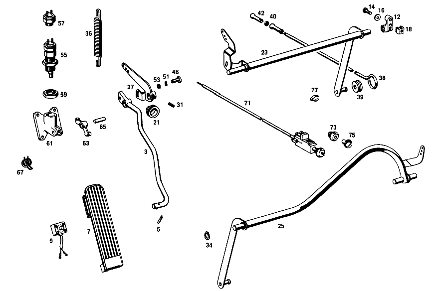

| № | Артикул | Название | Кол. | Примечание | Ограничение |
|---|---|---|---|---|---|
| 3 | A 110 300 03 04 | ПЕДАЛЬ ГАЗА | 1 | Рулевое управление: Влево [002] 010,10/50,12/52 FROM CHASSIS 043373;010,20/60,22/62 FROM CHASSIS 043746;012,10/50,12/52 FROM CHASSIS 093270;012,20/60,22/62 FROM CHASSIS 094491 [009] NOT FOR USE WITH MERCEDES-BENZ HYDRAULIC-AUTOMATIC CLUTCH | |
| 5 | N 001472 004002 | - ПРОСЕЧНОЙ ШТИФТ | 1 | ||
| 7 | A 110 301 01 02 | ПЛАСТИНА ПЕДАЛИ | - | Коробка передач | |
| 7 | A 110 300 00 02 | Пластина педали | 1 | Коробка передач | |
| 9 | A 000 545 32 14 | ВЫКЛЮЧАТЕЛЬ | 1 | РЕГУЛИР. ХОЛ. ХОДА Автоматическая коробка переключения передач [009] NOT FOR USE WITH MERCEDES-BENZ HYDRAULIC-AUTOMATIC CLUTCH [003] 010,10/50,12/52 UP TO CHASSIS 048976 EXCEPT FOR,SEE FOOTNOTE 5;010,20/60,22/62 UP TO CHASSIS 049090 EXCEPT FOR 046334,048382,048491 CONTINUED,SEE FOOTNOTE 4 [005] 046394, 048273, 048278, 048347, 048349, 048366, 048379, 048460, 048481, 048493, 048510, 048905- 048913, 048915- 048928, 048930- 048933, 048935- 048937, 048940, 048942, 048952- 048954, 048956, 048966, 048968- 048973. [004] 012,10/50,12/52 UP TO CHASSIS 108749 EXCEPT FOR,SEE FOOTNOTE 6;012,20/60,22/62 UP TO CHASSIS 108277 EXCEPT FOR 100012,107336,107754,108265 | |
| 12 | A 110 301 00 18 | Подшипник | 2 | ВАЛ РЕГУЛЯТОРА | |
| 14 | N 000931 006082 | БОЛТ | 4 | ОПОРА НА ПЕРЕГОРОДКЕ | |
| 16 | N 000125 006407 | ШАЙБА | 4 | ОПОРА НА ПЕРЕГОРОДКЕ | |
| 18 | A 000 990 22 91 | ГАЙКОДЕРЖАТЕЛЬ | - | ||
| 18 | A 001 990 67 91 | Гайкодержатель | 4 | ОПОРА НА ПЕРЕГОРОДКЕ [415] ПРИМЕЧ. ПО ЗАМЕНЕ ПРИМЕНИМО ТОЛЬКО ДЛЯ СТОЯЩИХ РЯДОМ ПОЗИЦИЙ | |
| 21 | A 183 997 00 81 | втулка | 1 | PEDAL LEVER THROUGH FRONT PANEL | |
| 23 | A 111 300 17 20 | ВАЛ | 1 | Рулевое управление: Влево [002] 010,10/50,12/52 FROM CHASSIS 043373;010,20/60,22/62 FROM CHASSIS 043746;012,10/50,12/52 FROM CHASSIS 093270;012,20/60,22/62 FROM CHASSIS 094491 [009] NOT FOR USE WITH MERCEDES-BENZ HYDRAULIC-AUTOMATIC CLUTCH | |
| 25 | A 111 300 21 20 | ВАЛ | - | Рулевое управление: Вправо [009] NOT FOR USE WITH MERCEDES-BENZ HYDRAULIC-AUTOMATIC CLUTCH [007] 010,10/50,12/52 FROM CHASSIS 048977 ALSO INSTALLED ON,SEE FOOTNOTE 5;010,20/60,22/62 FROM CHASSIS 049091 ALSO INSTALLED ON 046334,048382,048491 CONTINUED,SEE FOOTNOTE 8 [005] 046394, 048273, 048278, 048347, 048349, 048366, 048379, 048460, 048481, 048493, 048510, 048905- 048913, 048915- 048928, 048930- 048933, 048935- 048937, 048940, 048942, 048952- 048954, 048956, 048966, 048968- 048973. [008] 012,10/50,12/52 FROM CHASSIS 108750 ALSO INSTALLED ON,SEE FOOTNOTE 6;012,20/60,22/62 FROM CHASSIS 108278 ALSO INSTALLED ON 100012,107336,107754,108265 | |
| 27 | A 110 300 00 25 | - РЫЧАГ | 1 | Рулевое управление: Влево [002] 010,10/50,12/52 FROM CHASSIS 043373;010,20/60,22/62 FROM CHASSIS 043746;012,10/50,12/52 FROM CHASSIS 093270;012,20/60,22/62 FROM CHASSIS 094491 [009] NOT FOR USE WITH MERCEDES-BENZ HYDRAULIC-AUTOMATIC CLUTCH [003] 010,10/50,12/52 UP TO CHASSIS 048976 EXCEPT FOR,SEE FOOTNOTE 5;010,20/60,22/62 UP TO CHASSIS 049090 EXCEPT FOR 046334,048382,048491 CONTINUED,SEE FOOTNOTE 4 [005] 046394, 048273, 048278, 048347, 048349, 048366, 048379, 048460, 048481, 048493, 048510, 048905- 048913, 048915- 048928, 048930- 048933, 048935- 048937, 048940, 048942, 048952- 048954, 048956, 048966, 048968- 048973. [004] 012,10/50,12/52 UP TO CHASSIS 108749 EXCEPT FOR,SEE FOOTNOTE 6;012,20/60,22/62 UP TO CHASSIS 108277 EXCEPT FOR 100012,107336,107754,108265 | |
| 31 | N 001481 004004 | - Распорный штифт | 1 | Рулевое управление: Влево [002] 010,10/50,12/52 FROM CHASSIS 043373;010,20/60,22/62 FROM CHASSIS 043746;012,10/50,12/52 FROM CHASSIS 093270;012,20/60,22/62 FROM CHASSIS 094491 [009] NOT FOR USE WITH MERCEDES-BENZ HYDRAULIC-AUTOMATIC CLUTCH [003] 010,10/50,12/52 UP TO CHASSIS 048976 EXCEPT FOR,SEE FOOTNOTE 5;010,20/60,22/62 UP TO CHASSIS 049090 EXCEPT FOR 046334,048382,048491 CONTINUED,SEE FOOTNOTE 4 [005] 046394, 048273, 048278, 048347, 048349, 048366, 048379, 048460, 048481, 048493, 048510, 048905- 048913, 048915- 048928, 048930- 048933, 048935- 048937, 048940, 048942, 048952- 048954, 048956, 048966, 048968- 048973. [004] 012,10/50,12/52 UP TO CHASSIS 108749 EXCEPT FOR,SEE FOOTNOTE 6;012,20/60,22/62 UP TO CHASSIS 108277 EXCEPT FOR 100012,107336,107754,108265 | |
| 34 | N 900055 012402 | Стопорное кольцо | 1 | CONTROL SHAFT TO BEARING Рулевое управление: Вправо | |
| 36 | A 121 993 00 10 | пружина | 1 | Рулевое управление: Влево | |
| 36 | A 121 993 00 10 | пружина | 1 | Рулевое управление: Вправо [009] NOT FOR USE WITH MERCEDES-BENZ HYDRAULIC-AUTOMATIC CLUTCH [007] 010,10/50,12/52 FROM CHASSIS 048977 ALSO INSTALLED ON,SEE FOOTNOTE 5;010,20/60,22/62 FROM CHASSIS 049091 ALSO INSTALLED ON 046334,048382,048491 CONTINUED,SEE FOOTNOTE 8 [005] 046394, 048273, 048278, 048347, 048349, 048366, 048379, 048460, 048481, 048493, 048510, 048905- 048913, 048915- 048928, 048930- 048933, 048935- 048937, 048940, 048942, 048952- 048954, 048956, 048966, 048968- 048973. [008] 012,10/50,12/52 FROM CHASSIS 108750 ALSO INSTALLED ON,SEE FOOTNOTE 6;012,20/60,22/62 FROM CHASSIS 108278 ALSO INSTALLED ON 100012,107336,107754,108265 | |
| 38 | A 111 300 13 15 | ТЯГА | 1 | ||
| 39 | A 121 301 00 97 | - МАНЖЕТА | - | ||
| 39 | A 180 301 00 97 | - Демпфирующее кольцо | 1 | ||
| 40 | N 000934 005008 | - Гайка | 1 | M5 [002] 010,10/50,12/52 FROM CHASSIS 043373;010,20/60,22/62 FROM CHASSIS 043746;012,10/50,12/52 FROM CHASSIS 093270;012,20/60,22/62 FROM CHASSIS 094491 [009] NOT FOR USE WITH MERCEDES-BENZ HYDRAULIC-AUTOMATIC CLUTCH | |
| 42 | A 000 991 89 22 | - ПОДПЯТНИК ШАРОВОЙ | 1 | ||
| 42 | A 000 993 04 61 | - Шаровой подпятник | 1 | [002] 010,10/50,12/52 FROM CHASSIS 043373;010,20/60,22/62 FROM CHASSIS 043746;012,10/50,12/52 FROM CHASSIS 093270;012,20/60,22/62 FROM CHASSIS 094491 [009] NOT FOR USE WITH MERCEDES-BENZ HYDRAULIC-AUTOMATIC CLUTCH | |
| 48 | N 000933 008113 | БОЛТ | 1 | [002] 010,10/50,12/52 FROM CHASSIS 043373;010,20/60,22/62 FROM CHASSIS 043746;012,10/50,12/52 FROM CHASSIS 093270;012,20/60,22/62 FROM CHASSIS 094491 [009] NOT FOR USE WITH MERCEDES-BENZ HYDRAULIC-AUTOMATIC CLUTCH | |
| 51 | N 000137 008204 | Пружинная шайба | - | ||
| 51 | N 000137 008212 | Пружинная шайба | 1 | [002] 010,10/50,12/52 FROM CHASSIS 043373;010,20/60,22/62 FROM CHASSIS 043746;012,10/50,12/52 FROM CHASSIS 093270;012,20/60,22/62 FROM CHASSIS 094491 [009] NOT FOR USE WITH MERCEDES-BENZ HYDRAULIC-AUTOMATIC CLUTCH | |
| 53 | N 000125 008407 | ШАЙБА | 1 | [002] 010,10/50,12/52 FROM CHASSIS 043373;010,20/60,22/62 FROM CHASSIS 043746;012,10/50,12/52 FROM CHASSIS 093270;012,20/60,22/62 FROM CHASSIS 094491 [009] NOT FOR USE WITH MERCEDES-BENZ HYDRAULIC-AUTOMATIC CLUTCH | |
| 55 | A 112 300 02 41 | УПОР | 1 | для KICK\-DOWN SWITCH Рулевое управление: ВлевоАвтоматическая коробка переключения передач [009] NOT FOR USE WITH MERCEDES-BENZ HYDRAULIC-AUTOMATIC CLUTCH | |
| 57 | A 000 545 17 06 | - Переключатель | 1 | Автоматическая коробка переключения передач [009] NOT FOR USE WITH MERCEDES-BENZ HYDRAULIC-AUTOMATIC CLUTCH | |
| 59 | A 112 990 01 51 | - ГАЙКА | 1 | Автоматическая коробка переключения передач [009] NOT FOR USE WITH MERCEDES-BENZ HYDRAULIC-AUTOMATIC CLUTCH | |
| 61 | A 112 304 00 27 | КОРПУС | 1 | Рулевое управление: ВправоАвтоматическая коробка переключения передач [009] NOT FOR USE WITH MERCEDES-BENZ HYDRAULIC-AUTOMATIC CLUTCH | |
| 63 | A 112 304 01 20 | РЫЧАГ | 1 | Рулевое управление: ВправоАвтоматическая коробка переключения передач [009] NOT FOR USE WITH MERCEDES-BENZ HYDRAULIC-AUTOMATIC CLUTCH | |
| 65 | A 112 997 00 10 | ШТИФТ | 1 | Рулевое управление: ВправоАвтоматическая коробка переключения передач [009] NOT FOR USE WITH MERCEDES-BENZ HYDRAULIC-AUTOMATIC CLUTCH | |
| 67 | A 112 993 00 20 | ПРУЖИНА | 1 | Рулевое управление: ВправоАвтоматическая коробка переключения передач [009] NOT FOR USE WITH MERCEDES-BENZ HYDRAULIC-AUTOMATIC CLUTCH | |
| 71 | A 111 300 11 30 | ПРОВОЛОЧНЫЙ ТРОС | 1 | 940 MM [010] ДЛИНУ ПО ПОТРЕБНОСТИ УМЕНЬШИТЬ | |
| 73 | A 110 302 00 08 | - НАПРАВЛ. ЭЛЕМЕНТ | 1 | ||
| 75 | A 110 300 02 07 | КНОПКА | 1 | ||
| 77 | A 120 993 02 25 | пружина | 1 | CHOKE CABLE TO WATER PIPE Рулевое управление: Влево [402] БОЛЬШЕ НЕ ПОСТАВЛЯЕТСЯ | |
| A 110 300 02 04 | ПЕДАЛЬ ГАЗА | 1 | Рулевое управление: Влево [001] 010,10/50,12/52 UP TO CHASSIS 043372;010,20/60,22/62 UP TO CHASSIS 043745;012,10/50,12/52 UP TO CHASSIS 093269;012,20/60,22/62 UP TO CHASSIS 094490 | ||
| A 111 300 01 04 | ПЕДАЛЬ ГАЗА | 1 | Рулевое управление: Вправо [001] 010,10/50,12/52 UP TO CHASSIS 043372;010,20/60,22/62 UP TO CHASSIS 043745;012,10/50,12/52 UP TO CHASSIS 093269;012,20/60,22/62 UP TO CHASSIS 094490 | ||
| A 111 300 02 04 | ПЕДАЛЬ ГАЗА | 1 | Рулевое управление: Вправо [002] 010,10/50,12/52 FROM CHASSIS 043373;010,20/60,22/62 FROM CHASSIS 043746;012,10/50,12/52 FROM CHASSIS 093270;012,20/60,22/62 FROM CHASSIS 094491 [009] NOT FOR USE WITH MERCEDES-BENZ HYDRAULIC-AUTOMATIC CLUTCH | ||
| A 112 300 00 02 | ПЛАСТИНА | 1 | Автоматическая коробка переключения передач [009] NOT FOR USE WITH MERCEDES-BENZ HYDRAULIC-AUTOMATIC CLUTCH [003] 010,10/50,12/52 UP TO CHASSIS 048976 EXCEPT FOR,SEE FOOTNOTE 5;010,20/60,22/62 UP TO CHASSIS 049090 EXCEPT FOR 046334,048382,048491 CONTINUED,SEE FOOTNOTE 4 [005] 046394, 048273, 048278, 048347, 048349, 048366, 048379, 048460, 048481, 048493, 048510, 048905- 048913, 048915- 048928, 048930- 048933, 048935- 048937, 048940, 048942, 048952- 048954, 048956, 048966, 048968- 048973. [004] 012,10/50,12/52 UP TO CHASSIS 108749 EXCEPT FOR,SEE FOOTNOTE 6;012,20/60,22/62 UP TO CHASSIS 108277 EXCEPT FOR 100012,107336,107754,108265 | ||
| A 110 301 01 83 | - ВСТАВКА | - | |||
| A 110 301 00 83 | - ВСТАВКА | 1 | |||
| A 110 301 05 82 | - ЧЕХОЛ | - | |||
| A 110 300 00 02 | - Пластина педали | 1 | |||
| N 000084 003109 | - БОЛТ | 4 | ДАТЧИК ХОЛ. ХОДА НА ДЕРЖАТ. Автоматическая коробка переключения передач [009] NOT FOR USE WITH MERCEDES-BENZ HYDRAULIC-AUTOMATIC CLUTCH [003] 010,10/50,12/52 UP TO CHASSIS 048976 EXCEPT FOR,SEE FOOTNOTE 5;010,20/60,22/62 UP TO CHASSIS 049090 EXCEPT FOR 046334,048382,048491 CONTINUED,SEE FOOTNOTE 4 [005] 046394, 048273, 048278, 048347, 048349, 048366, 048379, 048460, 048481, 048493, 048510, 048905- 048913, 048915- 048928, 048930- 048933, 048935- 048937, 048940, 048942, 048952- 048954, 048956, 048966, 048968- 048973. [004] 012,10/50,12/52 UP TO CHASSIS 108749 EXCEPT FOR,SEE FOOTNOTE 6;012,20/60,22/62 UP TO CHASSIS 108277 EXCEPT FOR 100012,107336,107754,108265 | ||
| N 000137 003100 | - ШАЙБА ПРУЖИННАЯ | 4 | ДАТЧИК ХОЛ. ХОДА НА ДЕРЖАТ. Автоматическая коробка переключения передач [009] NOT FOR USE WITH MERCEDES-BENZ HYDRAULIC-AUTOMATIC CLUTCH [003] 010,10/50,12/52 UP TO CHASSIS 048976 EXCEPT FOR,SEE FOOTNOTE 5;010,20/60,22/62 UP TO CHASSIS 049090 EXCEPT FOR 046334,048382,048491 CONTINUED,SEE FOOTNOTE 4 [005] 046394, 048273, 048278, 048347, 048349, 048366, 048379, 048460, 048481, 048493, 048510, 048905- 048913, 048915- 048928, 048930- 048933, 048935- 048937, 048940, 048942, 048952- 048954, 048956, 048966, 048968- 048973. [004] 012,10/50,12/52 UP TO CHASSIS 108749 EXCEPT FOR,SEE FOOTNOTE 6;012,20/60,22/62 UP TO CHASSIS 108277 EXCEPT FOR 100012,107336,107754,108265 | ||
| A 112 997 09 40 | - УПЛОТНИТ. КОЛЬЦО | 1 | ПО НЕОБХОДИМОСТИ 0.5mm [009] NOT FOR USE WITH MERCEDES-BENZ HYDRAULIC-AUTOMATIC CLUTCH [003] 010,10/50,12/52 UP TO CHASSIS 048976 EXCEPT FOR,SEE FOOTNOTE 5;010,20/60,22/62 UP TO CHASSIS 049090 EXCEPT FOR 046334,048382,048491 CONTINUED,SEE FOOTNOTE 4 [005] 046394, 048273, 048278, 048347, 048349, 048366, 048379, 048460, 048481, 048493, 048510, 048905- 048913, 048915- 048928, 048930- 048933, 048935- 048937, 048940, 048942, 048952- 048954, 048956, 048966, 048968- 048973. [004] 012,10/50,12/52 UP TO CHASSIS 108749 EXCEPT FOR,SEE FOOTNOTE 6;012,20/60,22/62 UP TO CHASSIS 108277 EXCEPT FOR 100012,107336,107754,108265 [402] БОЛЬШЕ НЕ ПОСТАВЛЯЕТСЯ | ||
| A 112 997 10 40 | - УПЛОТНИТ. КОЛЬЦО | 1 | ПО НЕОБХОДИМОСТИ 1.0 MM Автоматическая коробка переключения передач [009] NOT FOR USE WITH MERCEDES-BENZ HYDRAULIC-AUTOMATIC CLUTCH [003] 010,10/50,12/52 UP TO CHASSIS 048976 EXCEPT FOR,SEE FOOTNOTE 5;010,20/60,22/62 UP TO CHASSIS 049090 EXCEPT FOR 046334,048382,048491 CONTINUED,SEE FOOTNOTE 4 [005] 046394, 048273, 048278, 048347, 048349, 048366, 048379, 048460, 048481, 048493, 048510, 048905- 048913, 048915- 048928, 048930- 048933, 048935- 048937, 048940, 048942, 048952- 048954, 048956, 048966, 048968- 048973. [004] 012,10/50,12/52 UP TO CHASSIS 108749 EXCEPT FOR,SEE FOOTNOTE 6;012,20/60,22/62 UP TO CHASSIS 108277 EXCEPT FOR 100012,107336,107754,108265 | ||
| A 112 997 11 40 | - УПЛОТНИТ. КОЛЬЦО | 1 | ПО НЕОБХОДИМОСТИ 1.2 MM [009] NOT FOR USE WITH MERCEDES-BENZ HYDRAULIC-AUTOMATIC CLUTCH [003] 010,10/50,12/52 UP TO CHASSIS 048976 EXCEPT FOR,SEE FOOTNOTE 5;010,20/60,22/62 UP TO CHASSIS 049090 EXCEPT FOR 046334,048382,048491 CONTINUED,SEE FOOTNOTE 4 [005] 046394, 048273, 048278, 048347, 048349, 048366, 048379, 048460, 048481, 048493, 048510, 048905- 048913, 048915- 048928, 048930- 048933, 048935- 048937, 048940, 048942, 048952- 048954, 048956, 048966, 048968- 048973. [004] 012,10/50,12/52 UP TO CHASSIS 108749 EXCEPT FOR,SEE FOOTNOTE 6;012,20/60,22/62 UP TO CHASSIS 108277 EXCEPT FOR 100012,107336,107754,108265 | ||
| A 112 997 12 40 | - УПЛОТНИТ. КОЛЬЦО | 1 | ПО НЕОБХОДИМОСТИ 1.5mm [009] NOT FOR USE WITH MERCEDES-BENZ HYDRAULIC-AUTOMATIC CLUTCH [003] 010,10/50,12/52 UP TO CHASSIS 048976 EXCEPT FOR,SEE FOOTNOTE 5;010,20/60,22/62 UP TO CHASSIS 049090 EXCEPT FOR 046334,048382,048491 CONTINUED,SEE FOOTNOTE 4 [005] 046394, 048273, 048278, 048347, 048349, 048366, 048379, 048460, 048481, 048493, 048510, 048905- 048913, 048915- 048928, 048930- 048933, 048935- 048937, 048940, 048942, 048952- 048954, 048956, 048966, 048968- 048973. [004] 012,10/50,12/52 UP TO CHASSIS 108749 EXCEPT FOR,SEE FOOTNOTE 6;012,20/60,22/62 UP TO CHASSIS 108277 EXCEPT FOR 100012,107336,107754,108265 | ||
| N 000094 001001 | - ШПЛИНТ | 1 | Автоматическая коробка переключения передач [009] NOT FOR USE WITH MERCEDES-BENZ HYDRAULIC-AUTOMATIC CLUTCH [003] 010,10/50,12/52 UP TO CHASSIS 048976 EXCEPT FOR,SEE FOOTNOTE 5;010,20/60,22/62 UP TO CHASSIS 049090 EXCEPT FOR 046334,048382,048491 CONTINUED,SEE FOOTNOTE 4 [005] 046394, 048273, 048278, 048347, 048349, 048366, 048379, 048460, 048481, 048493, 048510, 048905- 048913, 048915- 048928, 048930- 048933, 048935- 048937, 048940, 048942, 048952- 048954, 048956, 048966, 048968- 048973. [004] 012,10/50,12/52 UP TO CHASSIS 108749 EXCEPT FOR,SEE FOOTNOTE 6;012,20/60,22/62 UP TO CHASSIS 108277 EXCEPT FOR 100012,107336,107754,108265 | ||
| A 000 546 94 44 | - ЗАЖИМ | 2 | Автоматическая коробка переключения передач [009] NOT FOR USE WITH MERCEDES-BENZ HYDRAULIC-AUTOMATIC CLUTCH [003] 010,10/50,12/52 UP TO CHASSIS 048976 EXCEPT FOR,SEE FOOTNOTE 5;010,20/60,22/62 UP TO CHASSIS 049090 EXCEPT FOR 046334,048382,048491 CONTINUED,SEE FOOTNOTE 4 [005] 046394, 048273, 048278, 048347, 048349, 048366, 048379, 048460, 048481, 048493, 048510, 048905- 048913, 048915- 048928, 048930- 048933, 048935- 048937, 048940, 048942, 048952- 048954, 048956, 048966, 048968- 048973. [004] 012,10/50,12/52 UP TO CHASSIS 108749 EXCEPT FOR,SEE FOOTNOTE 6;012,20/60,22/62 UP TO CHASSIS 108277 EXCEPT FOR 100012,107336,107754,108265 | ||
| N 000084 003105 | - Винт | 1 | Автоматическая коробка переключения передач [009] NOT FOR USE WITH MERCEDES-BENZ HYDRAULIC-AUTOMATIC CLUTCH [003] 010,10/50,12/52 UP TO CHASSIS 048976 EXCEPT FOR,SEE FOOTNOTE 5;010,20/60,22/62 UP TO CHASSIS 049090 EXCEPT FOR 046334,048382,048491 CONTINUED,SEE FOOTNOTE 4 [005] 046394, 048273, 048278, 048347, 048349, 048366, 048379, 048460, 048481, 048493, 048510, 048905- 048913, 048915- 048928, 048930- 048933, 048935- 048937, 048940, 048942, 048952- 048954, 048956, 048966, 048968- 048973. [004] 012,10/50,12/52 UP TO CHASSIS 108749 EXCEPT FOR,SEE FOOTNOTE 6;012,20/60,22/62 UP TO CHASSIS 108277 EXCEPT FOR 100012,107336,107754,108265 | ||
| N 000137 003100 | - ШАЙБА ПРУЖИННАЯ | 1 | Автоматическая коробка переключения передач [009] NOT FOR USE WITH MERCEDES-BENZ HYDRAULIC-AUTOMATIC CLUTCH [003] 010,10/50,12/52 UP TO CHASSIS 048976 EXCEPT FOR,SEE FOOTNOTE 5;010,20/60,22/62 UP TO CHASSIS 049090 EXCEPT FOR 046334,048382,048491 CONTINUED,SEE FOOTNOTE 4 [005] 046394, 048273, 048278, 048347, 048349, 048366, 048379, 048460, 048481, 048493, 048510, 048905- 048913, 048915- 048928, 048930- 048933, 048935- 048937, 048940, 048942, 048952- 048954, 048956, 048966, 048968- 048973. [004] 012,10/50,12/52 UP TO CHASSIS 108749 EXCEPT FOR,SEE FOOTNOTE 6;012,20/60,22/62 UP TO CHASSIS 108277 EXCEPT FOR 100012,107336,107754,108265 | ||
| A 110 300 00 02 | Пластина педали | 1 | Автоматическая коробка переключения передач [009] NOT FOR USE WITH MERCEDES-BENZ HYDRAULIC-AUTOMATIC CLUTCH [007] 010,10/50,12/52 FROM CHASSIS 048977 ALSO INSTALLED ON,SEE FOOTNOTE 5;010,20/60,22/62 FROM CHASSIS 049091 ALSO INSTALLED ON 046334,048382,048491 CONTINUED,SEE FOOTNOTE 8 [005] 046394, 048273, 048278, 048347, 048349, 048366, 048379, 048460, 048481, 048493, 048510, 048905- 048913, 048915- 048928, 048930- 048933, 048935- 048937, 048940, 048942, 048952- 048954, 048956, 048966, 048968- 048973. [008] 012,10/50,12/52 FROM CHASSIS 108750 ALSO INSTALLED ON,SEE FOOTNOTE 6;012,20/60,22/62 FROM CHASSIS 108278 ALSO INSTALLED ON 100012,107336,107754,108265 | ||
| A 110 301 00 83 | - ВСТАВКА | 1 | Автоматическая коробка переключения передач [009] NOT FOR USE WITH MERCEDES-BENZ HYDRAULIC-AUTOMATIC CLUTCH | ||
| A 110 301 04 82 | - ЧЕХОЛ | 1 | Автоматическая коробка переключения передач [009] NOT FOR USE WITH MERCEDES-BENZ HYDRAULIC-AUTOMATIC CLUTCH | ||
| A 111 300 04 20 | ВАЛ | 1 | Рулевое управление: Влево [001] 010,10/50,12/52 UP TO CHASSIS 043372;010,20/60,22/62 UP TO CHASSIS 043745;012,10/50,12/52 UP TO CHASSIS 093269;012,20/60,22/62 UP TO CHASSIS 094490 | ||
| A 111 300 06 20 | ВАЛ | 1 | Рулевое управление: Вправо [001] 010,10/50,12/52 UP TO CHASSIS 043372;010,20/60,22/62 UP TO CHASSIS 043745;012,10/50,12/52 UP TO CHASSIS 093269;012,20/60,22/62 UP TO CHASSIS 094490 | ||
| A 111 300 07 20 | ВАЛ | 1 | Рулевое управление: Вправо [002] 010,10/50,12/52 FROM CHASSIS 043373;010,20/60,22/62 FROM CHASSIS 043746;012,10/50,12/52 FROM CHASSIS 093270;012,20/60,22/62 FROM CHASSIS 094491 [009] NOT FOR USE WITH MERCEDES-BENZ HYDRAULIC-AUTOMATIC CLUTCH [003] 010,10/50,12/52 UP TO CHASSIS 048976 EXCEPT FOR,SEE FOOTNOTE 5;010,20/60,22/62 UP TO CHASSIS 049090 EXCEPT FOR 046334,048382,048491 CONTINUED,SEE FOOTNOTE 4 [005] 046394, 048273, 048278, 048347, 048349, 048366, 048379, 048460, 048481, 048493, 048510, 048905- 048913, 048915- 048928, 048930- 048933, 048935- 048937, 048940, 048942, 048952- 048954, 048956, 048966, 048968- 048973. [004] 012,10/50,12/52 UP TO CHASSIS 108749 EXCEPT FOR,SEE FOOTNOTE 6;012,20/60,22/62 UP TO CHASSIS 108277 EXCEPT FOR 100012,107336,107754,108265 | ||
| A 111 300 15 20 | ВАЛ | - | Рулевое управление: Вправо [009] NOT FOR USE WITH MERCEDES-BENZ HYDRAULIC-AUTOMATIC CLUTCH | ||
| A 108 300 09 20 | ВАЛ | 1 | Рулевое управление: Вправо [009] NOT FOR USE WITH MERCEDES-BENZ HYDRAULIC-AUTOMATIC CLUTCH | ||
| A 110 301 03 32 | РЫЧАГ | 1 | ДЛЯ ВОЗВРАТНОЙ ПРУЖИНЫ Рулевое управление: Влево [001] 010,10/50,12/52 UP TO CHASSIS 043372;010,20/60,22/62 UP TO CHASSIS 043745;012,10/50,12/52 UP TO CHASSIS 093269;012,20/60,22/62 UP TO CHASSIS 094490 | ||
| A 180 993 17 10 | пружина | 1 | Рулевое управление: Вправо [003] 010,10/50,12/52 UP TO CHASSIS 048976 EXCEPT FOR,SEE FOOTNOTE 5;010,20/60,22/62 UP TO CHASSIS 049090 EXCEPT FOR 046334,048382,048491 CONTINUED,SEE FOOTNOTE 4 [005] 046394, 048273, 048278, 048347, 048349, 048366, 048379, 048460, 048481, 048493, 048510, 048905- 048913, 048915- 048928, 048930- 048933, 048935- 048937, 048940, 048942, 048952- 048954, 048956, 048966, 048968- 048973. [004] 012,10/50,12/52 UP TO CHASSIS 108749 EXCEPT FOR,SEE FOOTNOTE 6;012,20/60,22/62 UP TO CHASSIS 108277 EXCEPT FOR 100012,107336,107754,108265 | ||
| A 000 991 16 22 | - Шаровой подпятник | - | |||
| A 111 301 00 14 | КОНЦ. ЭЛЕМЕНТ | 1 | [001] 010,10/50,12/52 UP TO CHASSIS 043372;010,20/60,22/62 UP TO CHASSIS 043745;012,10/50,12/52 UP TO CHASSIS 093269;012,20/60,22/62 UP TO CHASSIS 094490 | ||
| N 001479 006000 | ГАЙКА | 1 | [001] 010,10/50,12/52 UP TO CHASSIS 043372;010,20/60,22/62 UP TO CHASSIS 043745;012,10/50,12/52 UP TO CHASSIS 093269;012,20/60,22/62 UP TO CHASSIS 094490 | ||
| N 000934 006007 | Гайка | 1 | [001] 010,10/50,12/52 UP TO CHASSIS 043372;010,20/60,22/62 UP TO CHASSIS 043745;012,10/50,12/52 UP TO CHASSIS 093269;012,20/60,22/62 UP TO CHASSIS 094490 | ||
| N 000934 006012 | Гайка | 1 | [402] БОЛЬШЕ НЕ ПОСТАВЛЯЕТСЯ [001] 010,10/50,12/52 UP TO CHASSIS 043372;010,20/60,22/62 UP TO CHASSIS 043745;012,10/50,12/52 UP TO CHASSIS 093269;012,20/60,22/62 UP TO CHASSIS 094490 | ||
| A 127 300 00 86 | КОНЦ. ЭЛЕМЕНТ | 1 | [001] 010,10/50,12/52 UP TO CHASSIS 043372;010,20/60,22/62 UP TO CHASSIS 043745;012,10/50,12/52 UP TO CHASSIS 093269;012,20/60,22/62 UP TO CHASSIS 094490 | ||
| N 071805 008300 | - Пруж. стопорное кольцо | 1 | [001] 010,10/50,12/52 UP TO CHASSIS 043372;010,20/60,22/62 UP TO CHASSIS 043745;012,10/50,12/52 UP TO CHASSIS 093269;012,20/60,22/62 UP TO CHASSIS 094490 | ||
| N 000934 005008 | Гайка | 1 | M5 [001] 010,10/50,12/52 UP TO CHASSIS 043372;010,20/60,22/62 UP TO CHASSIS 043745;012,10/50,12/52 UP TO CHASSIS 093269;012,20/60,22/62 UP TO CHASSIS 094490 | ||
| A 180 990 00 17 | БОЛТ | 1 | РЫЧАГ К ВАЛУ [001] 010,10/50,12/52 UP TO CHASSIS 043372;010,20/60,22/62 UP TO CHASSIS 043745;012,10/50,12/52 UP TO CHASSIS 093269;012,20/60,22/62 UP TO CHASSIS 094490 | ||
| N 000934 006007 | Гайка | 1 | РЫЧАГ К ВАЛУ [001] 010,10/50,12/52 UP TO CHASSIS 043372;010,20/60,22/62 UP TO CHASSIS 043745;012,10/50,12/52 UP TO CHASSIS 093269;012,20/60,22/62 UP TO CHASSIS 094490 | ||
| A 112 300 03 41 | УПОР | 1 | без HOUSING для KICK\-DOWN SWITCH Рулевое управление: ВправоАвтоматическая коробка переключения передач [009] NOT FOR USE WITH MERCEDES-BENZ HYDRAULIC-AUTOMATIC CLUTCH | ||
| A 112 304 01 27 | КОРПУС | 1 | Рулевое управление: ВправоАвтоматическая коробка переключения передач [009] NOT FOR USE WITH MERCEDES-BENZ HYDRAULIC-AUTOMATIC CLUTCH | ||
| N 007985 006131 | Винт | 4 | SPRING\-LOADED STOP TO TOEBOARD Рулевое управление: ВправоАвтоматическая коробка переключения передач [009] NOT FOR USE WITH MERCEDES-BENZ HYDRAULIC-AUTOMATIC CLUTCH | ||
| A 094 990 68 10 | Пружинное кольцо | 4 | SPRING\-LOADED STOP TO TOEBOARD Рулевое управление: ВправоАвтоматическая коробка переключения передач [009] NOT FOR USE WITH MERCEDES-BENZ HYDRAULIC-AUTOMATIC CLUTCH | ||
| A 110 997 05 82 | ШЛАНГ | 1 | |||
| A 000 997 20 40 | УПЛОТНИТ. КОЛЬЦО | - | [403] НЕ УСТАНОВЛЕНО |
Позиций: 83 · подписано на схемах: 39 · колесо — плавный зум в курсор, перетаскивание — пан, двойной клик — зум, клик по артикулу — скопировать.